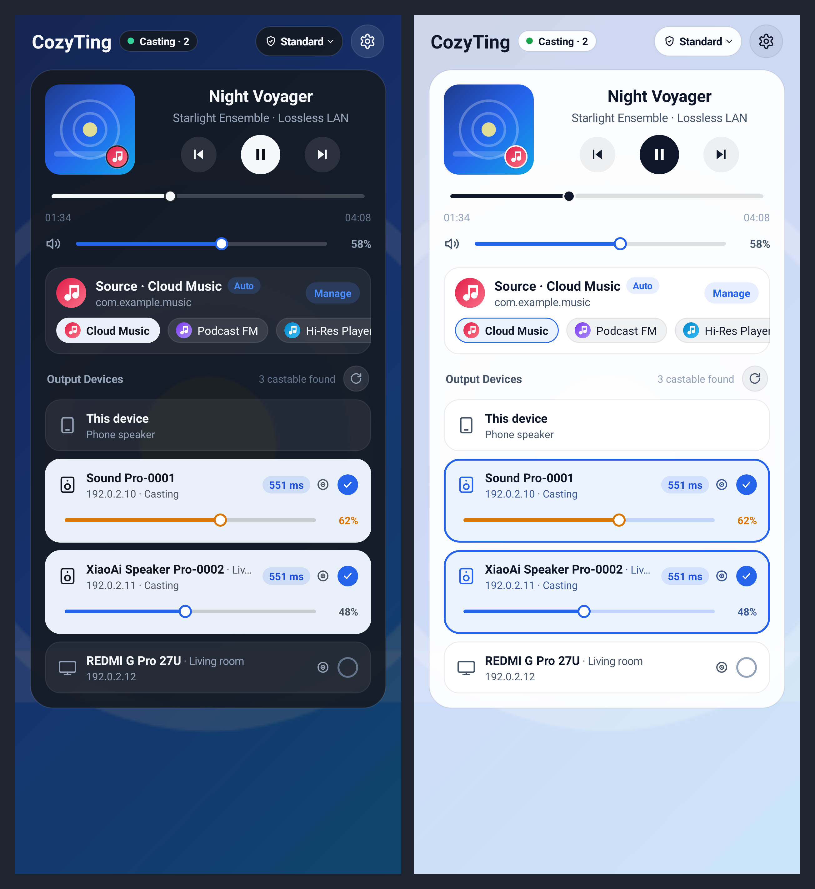
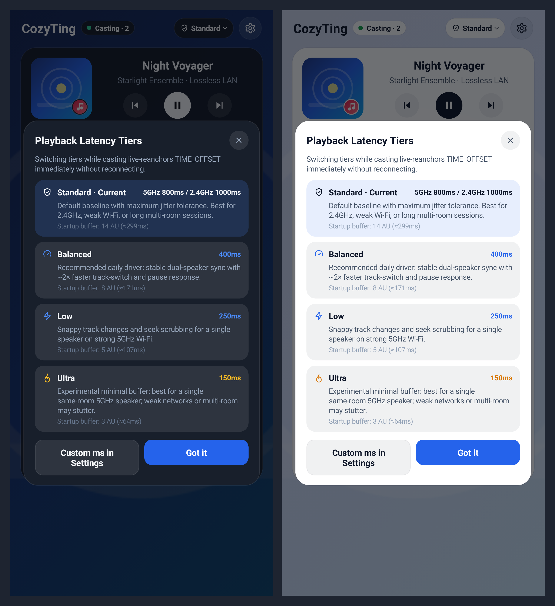
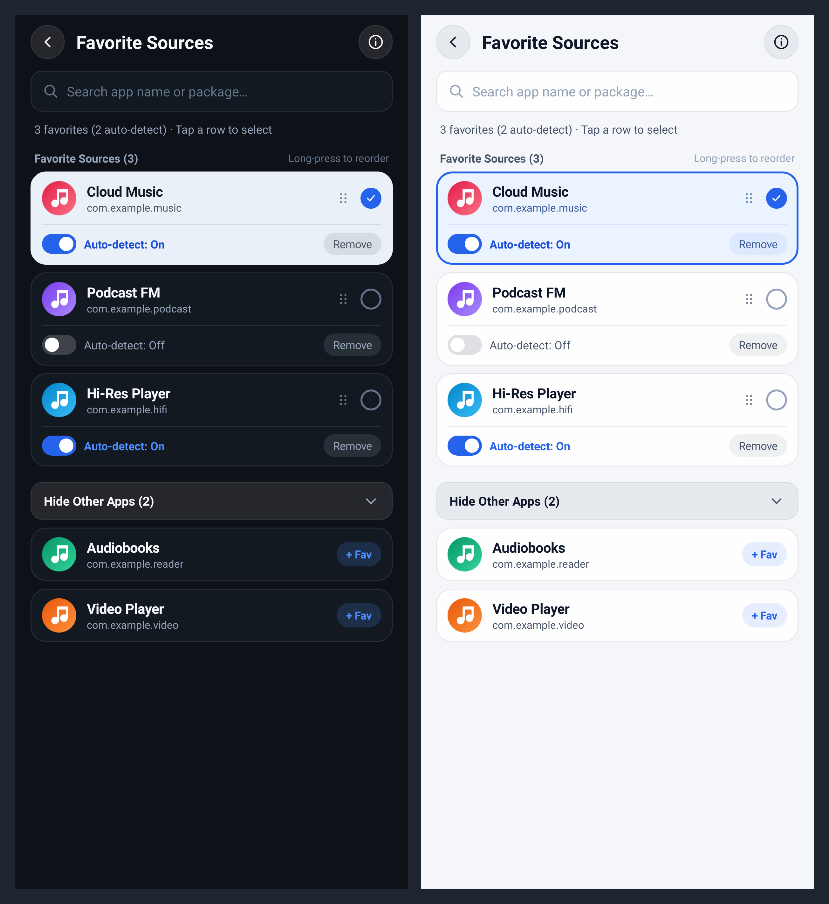
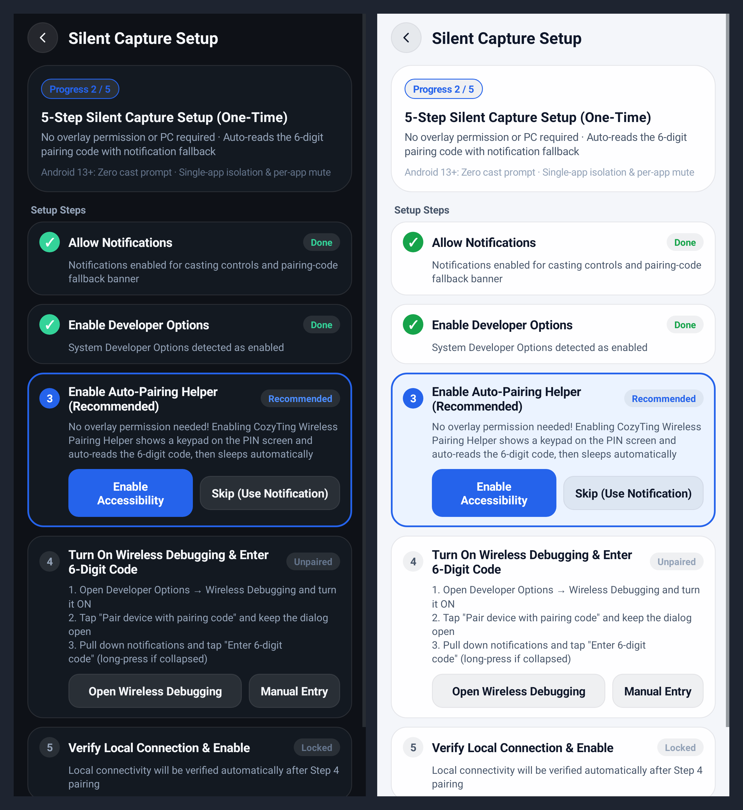
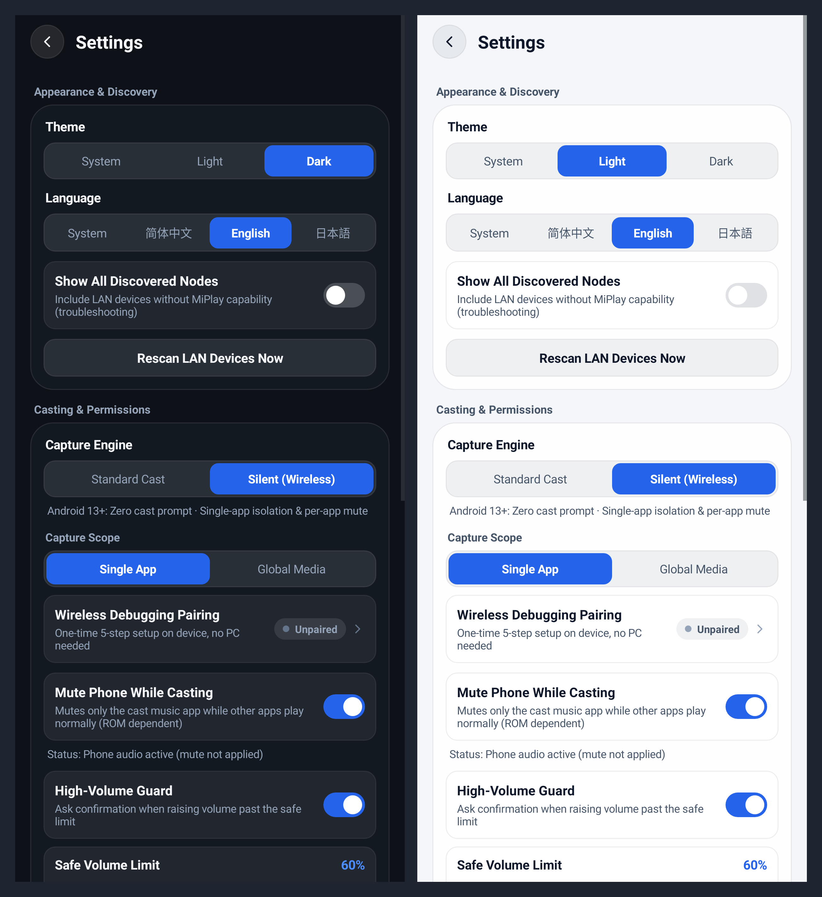
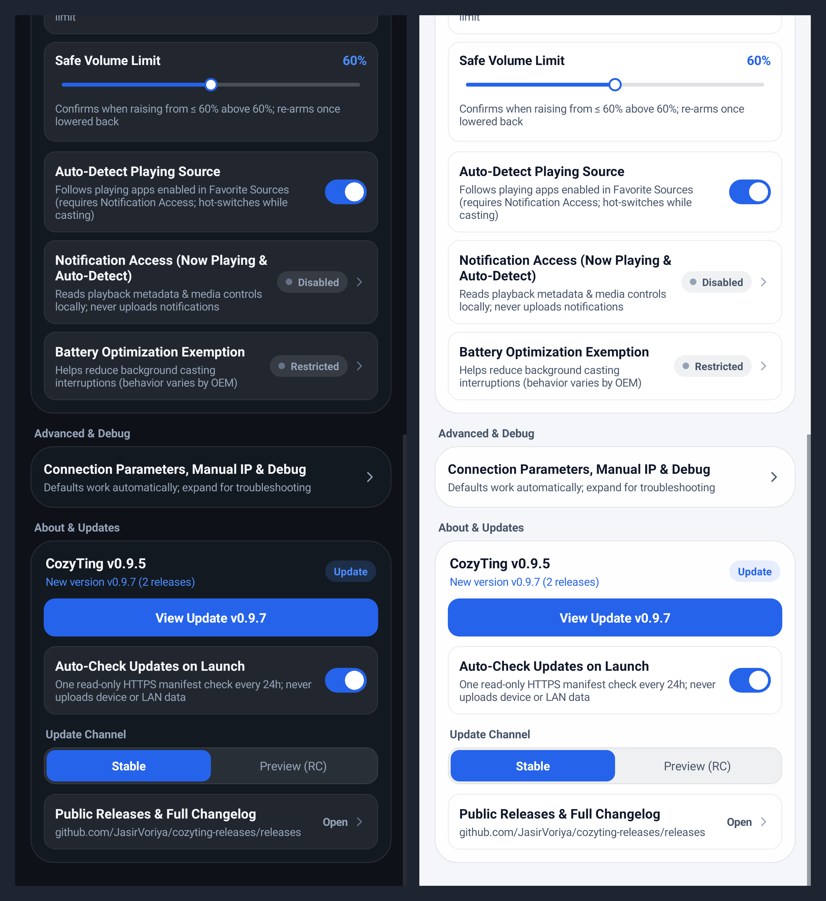
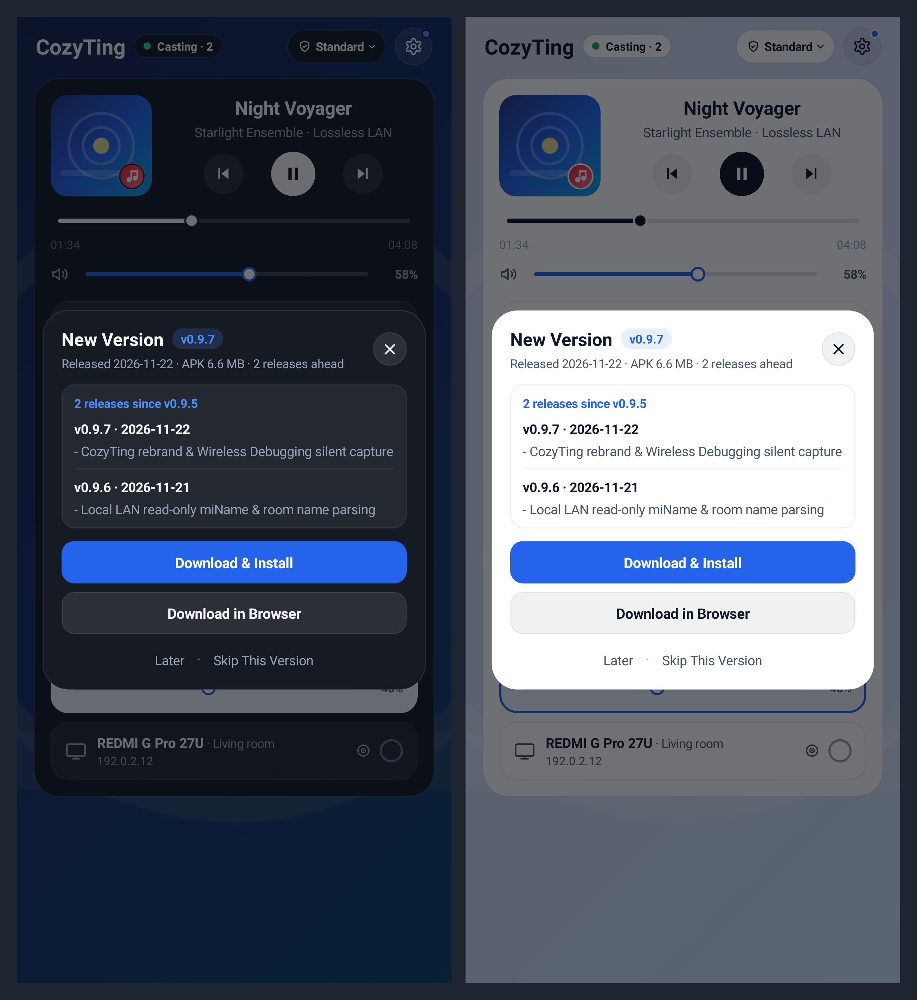

Brand-Free, Out-of-the-Box LAN Casting
Samsung, Pixel, OnePlus, OPPO, vivo, and Huawei phones connect directly to MiPlay-capable Xiaomi / XiaoAi speakers over home Wi-Fi—zero cloud relays and no Xiaomi account login.
CozyTing is a free, open-source third-party MiPlay local-network audio casting app (Android 10+, iOS planned). No root and no Xiaomi account required—stream exclusively from one chosen music app to one or up to 63 Xiaomi / XiaoAi speakers in millisecond sync, while voice messages and alerts stay private on your phone.

Compared to Bluetooth, stock Xiaomi MiPlay, and system screen mirroring, CozyTing combines brand freedom, multi-room Wi-Fi sync, and strict per-app privacy isolation.
| Capability | CozyTing | Bluetooth | Stock Xiaomi MiPlay | Screen Mirroring |
|---|---|---|---|---|
| Phone Brand Support | Any Android 10+ phone (iOS planned) | Any brand | Select Xiaomi / Redmi only | Any brand |
| Multi-Room Sync | Up to 63 speakers in ms sync; live add/remove | Usually 1 speaker; multi-speaker echo | Supports multiple MiPlay speakers | Single target or high latency |
| Single-App Isolation | Only your chosen music app; zero chat/alert leaks | Broadcasts all phone audio | Supports media source routing | Broadcasts entire screen & audio |
| Videos Don’t Pause Music | Dual-zone AudioFocus isolation (Android 13+ Silent Mode) | Videos immediately pause speaker music | Depends on OS version | Cannot isolate |
| Live Latency Tuning | 4 tiers (150–1000ms) + custom ms without reconnecting | Not adjustable | Not adjustable | Not adjustable |
| Privacy, Account & License | Pure LAN, zero Xiaomi account, AGPL-3.0 open source | Local proprietary | Tied to Xiaomi account & ROM | Depends on vendor service |
Complex multi-speaker clock synchronization and LAN protocol handling stay under the hood—leaving a calm, effortless player up front.
Samsung, Pixel, OnePlus, OPPO, vivo, and Huawei phones connect directly to MiPlay-capable Xiaomi / XiaoAi speakers over home Wi-Fi—zero cloud relays and no Xiaomi account login.
Fail-Closed single-UID isolation never silently degrades to full-system screen capture or microphone input. Voice notes, short videos, and notifications stay off your living-room speakers.
Pair once on-device with Android’s 6-digit pairing code to remove repeated cast prompts, unlock true per-app phone mute, and isolate AudioFocus so phone videos never interrupt speaker playback.
Select living-room, bedroom, and study speakers together with per-speaker volume sliders, room names, and live latency readouts (`ms`). Add or remove rooms mid-song without interruption.
Switch between Standard (800/1000ms), Balanced (400ms), Low (250ms), Ultra (150ms), or custom ms right from the top bar—reanchoring TIME_OFFSET live with zero disconnect.
Curate and drag-reorder favorite music apps with per-app Auto-Detect toggles, enjoy album-art ambient backdrops in Dark / Light / System themes, and optional SHA-256 verified updates.
Narration-free visual walkthrough: brand-free Android support, automatic music-app following, watching short videos without interrupting speaker music, whole-home sync with 4 live latency tiers, and pure-LAN zero-cloud privacy.
Every screenshot is rendered directly from the real Android View hierarchy in English, showcasing daily casting, latency tuning, source management, and setup flows.






Requires Android 10 (API 29) or higher on arm64-v8a. Download the signed release APK from GitHub Releases.
Connect your phone and Xiaomi / XiaoAi speakers to the same local Wi-Fi router; CozyTing discovers compatible MiPlay speakers automatically.
Standard Mode works out of the box on Android 10+. On Android 13+, optionally configure Silent Mode in Settings for zero-prompt capture and dual-zone AudioFocus.
Answers covering device compatibility, privacy boundaries, Wireless Debugging setup, and platform roadmap.
cozyting_core.h C ABI and XCFramework build pipeline) and cross-platform UI specification are ready; the native SwiftUI + ReplayKit iOS client is planned.